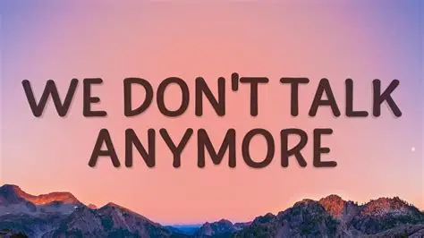

We don’t talk anymore We don’t talk anymore We don’t talk anymore Like we used to do We don’t love anymore What was all of it for ? Oh, we don’t talk anymore Like we used to do… I just heard you found the one you’ve been looking You’ve been looking for I wish I would have known that wasn’t me Cause even after all this time I still wonder Why I can’t move on Just the way you did so easily Don’t wanna know What kind of dress you’re wearing tonight If he’s holding onto you so tight The way I did before I over-dosed Should’ve known your love was a game Now I can’t get you out of my brain Oh, it’s such a shame That we don’t talk anymore We don’t talk anymore We don’t talk anymore Like we used to do We don’t love anymore What was all of it for ? Oh, we don’t talk anymore Like we used to do… [Selena Gomez] I just hope you’re lying next to somebody Who knows how to love you like me There must be a good reason that you’re gone Every now and then I think you Might want me to come show up at your door But I’m just too afraid that I’ll be wrong Don’t wanna know If you’re looking into her eyes If she’s holding onto you so tight the way I did before I over-dosed Should’ve known your love was a game Now I can’t get you out of my brain Oh, it’s such a shame [Charlie Puth & Selena Gomez] That we don’t talk anymore We don’t talk anymore (we don’t, we don’t) We don’t talk anymore (we don’t, we don’t) Like we used to do We don’t love anymore (we don’t, we don’t) What was all of it for ? (we don’t, we don’t) Oh, we don’t talk anymore Like we used to do… Like we used to do… [Charlie Puth] Don’t wanna know What kind of dress you’re wearing tonight If he’s holding onto you so tight The way I did fore [Selena Gomez] I over-dosed Should’ve known your love was a game Now I can’t get you out of my brain [Charlie Puth] Oh, it’s such a shame [Charlie Puth & Selena Gomez] That we don’t talk anymore We don’t talk anymore (we don’t, we don’t) We don’t talk anymore (we don’t, we don’t) Like we used to do We don’t love anymore (we don’t, we don’t) What was all of it for ? (we don’t, we don’t) Oh, we don’t talk anymore Like we used to do… (We don’t talk anymore) Don’t wanna know What kind of dress you’re wearing tonight If he’s holding onto you so tight The way I did before (We don’t talk anymore) I over-dosed Should’ve known your love was a game Now I can’t get you out of my brain Oh, it’s such a shame That we don’t talk anymore